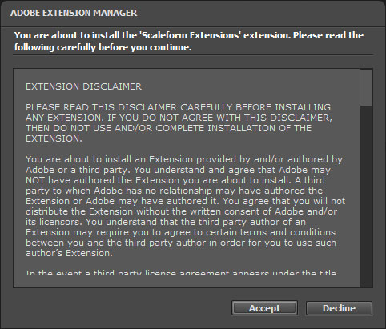
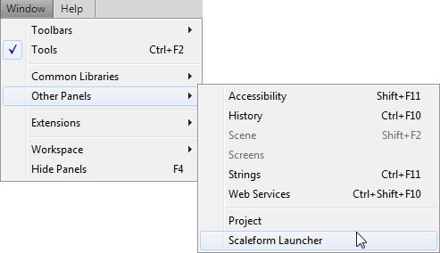
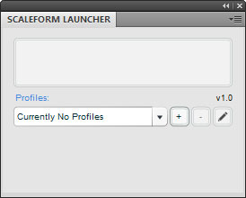
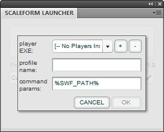
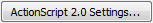
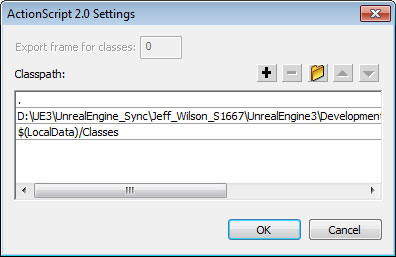

UDN
Search public documentation:
SettingUpScaleformGFxJP
English Translation
中国翻译
한국어
Interested in the Unreal Engine?
Visit the Unreal Technology site.
Looking for jobs and company info?
Check out the Epic games site.
Questions about support via UDN?
Contact the UDN Staff
中国翻译
한국어
Interested in the Unreal Engine?
Visit the Unreal Technology site.
Looking for jobs and company info?
Check out the Epic games site.
Questions about support via UDN?
Contact the UDN Staff
「Scaleform GFx」のセットアップ
「Scaleform GFx Launcher」
「Scaleform GFx Launcher」をインストールする
「Unreal Engine 3」のために「Scaleform GFx Launcher」をインストールするには、次のような標準的な手順に従います。- 「Adobe Flash Professional」内で、[ Help ] > [ Manage Extensions ] (拡張を管理) に進み、Adobe Extension Manager (Adobe 拡張マネージャ) を起動します。
- ランチャーの右上で、 Install (インストール) ボタンをクリックします。
- 開いたファイルブラウザ内で、
[UE3Directory]\Binaries\GFx\CLIK Toolsに進み、Scaleform CLIK.mxpファイルを選択します。
- ダイアログに表示されるライセンスに同意します。

- インストールに成功したことがダイアログに表示されます。

- 「Scaleform GFx Launcher」が Adobe Extension Manager のダイアログに表示されるようになりました。

- 「Adobe Flash Professional CS4」をリスタートして、Extension Manager を閉じます。
- [Window] (ウインドウ) > [Other Panels] (他のパネル) と進み、[Scaleform Launcher] (Scaleform ランチャー) を選択します。

- [ Scaleform Launcher ] パネルが表示されます。

「Scaleform GFx Launcher」の設定
「Scaleform Launcher」は、「GFx」プレイヤーを指すように設定します。それによって、CLIK ウィジェットとその機能が、「Adobe Flash Professional」内のプレビューで使いやすくなります。-
 ボタンをクリックすることによって、新たな Profile (プロファイル) を追加します。
ボタンをクリックすることによって、新たな Profile (プロファイル) を追加します。

- GFx プレイヤーが参照される必要があります。 ボタンをクリックすることによって、プレイヤーを追加します。
-
[UE3Directory]\Binaries\GFxに進みます。 -
FxMediaPlayer.exeを選択します。 注意 : スクリプトの実行速度が遅いという警告が出た場合は、[NO] を選択してください。これは既知の問題です。Scaleform 社によって今後のリリースで修正されます。 - プレイヤーの名前を FxMediaPlayer にします。

- プロファイルに名前を付けるには、[ Profile Name ] フィールドを使用します。
 プロファイルはもう 1 つ作成することができます。必要な場合は、
プロファイルはもう 1 つ作成することができます。必要な場合は、 FxMediaPlayerNoDebug.exe プレイヤーを使用します。このプレイヤーでは、コンソールにおけるインスタンスのロードに関するレポートが実行されません。ActionScript 内におけるトレースコマンドの吐き出しのみ実行されます。
分割スクリーンのプレビューのために追加プロファイルを設定する
標準的な定義のための UI の配置とスケーリング、ならびに、分割スクリーンの解像度を正確にテストするために、先の手順で複数のプロファイルを設定して、特定の解像度で「GFx Player」のプレビューウインドウを起動することができます。- プレイヤーのセットアップが完了したら、[Scaleform Launcher] パネル内で ボタンをクリックします。
- プロファイル名を SD にします。
- [command params] (コマンドパラメータ) テキストフィールド内で、
%SWF PATH%の後に-res 960:720というテキストを追加します。 - [ OK ] をクリックすることによって、保存します。
- 補足 : [Launch] (起動) ボタンをクリックすると、ムービーがスケーリングされてビューポートに適合するようになります。キーボード上で Ctrl + D を押すことによって、プレイヤー全体を満たすようにします。
CLIK ライブラリをインストールする
ActionScript 2 / Scaleform 3
- 「Adobe Flash Professional CS4」内で、[Edit] (編集) > [Preferences] (選択) に進みます。
- [ActionScript] を選択します。
-

ボタンをクリックします。 - ボタンを使用して、新たなエントリを追加します。
- CLIK ディレクトリへのパスをセットします。(例 :
[UE3Directory]\Development\Flash\AS2\CLIK) - 追加したパスは、上から 2 番目でなければなりません! (次の画像を参照してください)。

ActionScript 3 / Scaleform 4
- 「Adobe Flash Professional CS5.5」内で、[Edit] (編集) > [Preferences] (選択) に進みます。
- ActionScript を選択します。
-
 ボタンをクリックします。
ボタンをクリックします。
- Source パス セクションの ボタンを使用して、新たなエントリを追加します。
- CLIKディレクトリへのパスをセットします。(例：==[UE3Directory]\Development\Flash\AS3\CLIK==) 下記を参照してください。